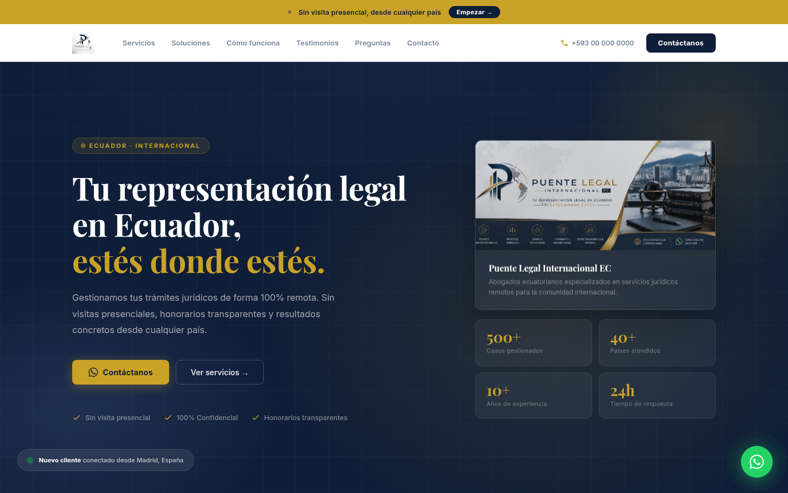
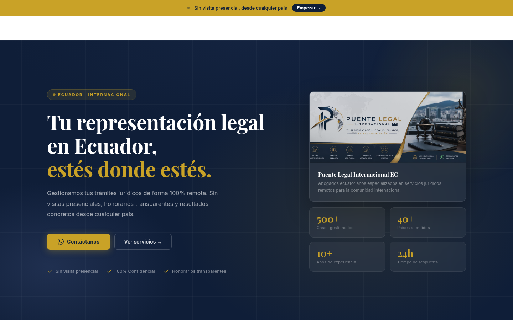
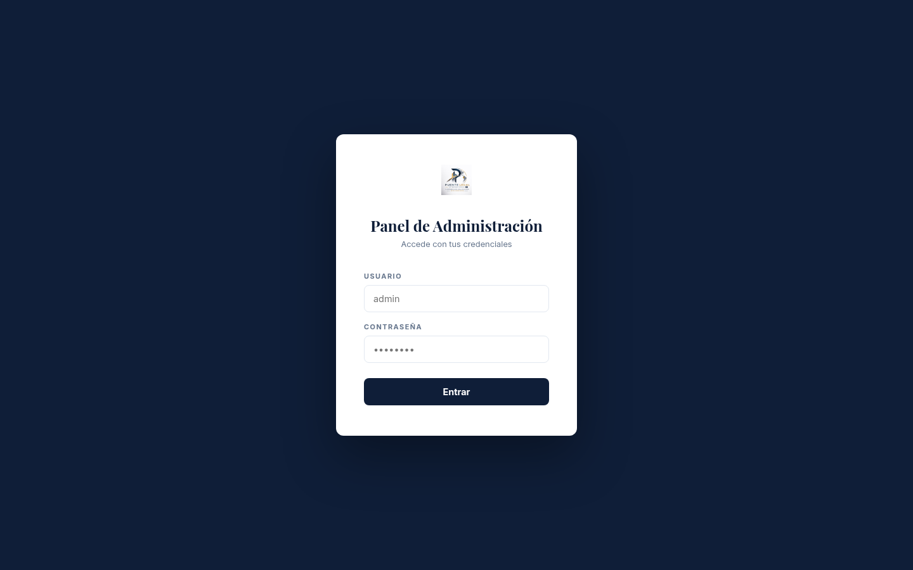
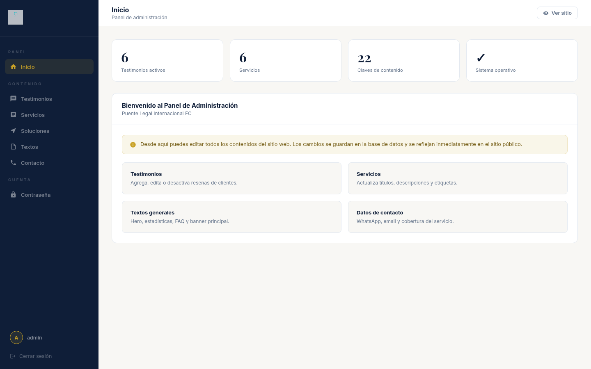
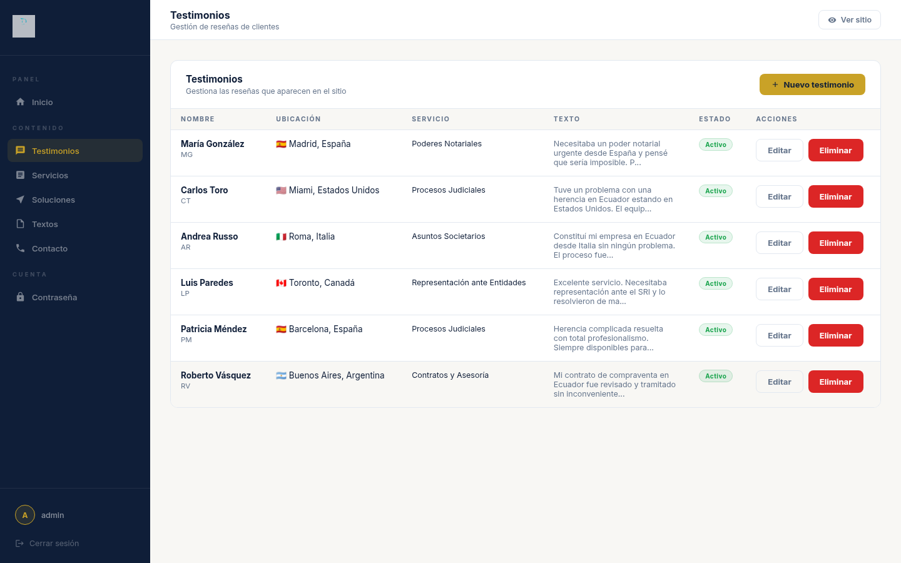

Al abrir el sitio web, el visitante ve la pantalla de inicio (Hero) con el mensaje principal del estudio, los botones de contacto y las estadísticas del despacho.

Figura 1.1 — Pantalla de inicio completa
Elementos de la pantalla de inicio
Elemento
Descripción
Barra superior dorada
Mensaje destacado con enlace rápido a WhatsApp ("Empezar →").
Menú de navegación
Links a todas las secciones: Servicios, Soluciones, Cómo funciona, Testimonios, Preguntas, Contacto.
Botón "Contáctanos"
Abre WhatsApp directamente con el número del estudio.
Botón "Ver servicios →"
Desplaza la página hacia la sección de servicios.
Estadísticas
500+ casos, 40+ países, 10+ años de experiencia, 24h respuesta.
Botón flotante WhatsApp
Ícono verde fijo en la esquina inferior derecha, disponible en toda la página.
💡 Tip: El menú se convierte en un menú desplegable (hamburguesa ☰) en dispositivos móviles. Toca el ícono para ver todas las opciones.
2
Sección Servicios
En esta sección se muestran los 6 servicios legales principales del estudio. Cada tarjeta tiene un número, título, descripción y etiquetas. Al hacer clic en cualquier tarjeta, se abre WhatsApp con un mensaje predeterminado sobre ese servicio.
Figura 2.1 — Grilla de servicios legales
#
Servicio
Descripción
01
Poderes y Trámites Notariales
Poderes especiales y generales, escrituras desde el exterior.
02
Procesos Judiciales
Representación en juicios civiles, penales y laborales.
03
Asuntos Societarios
Constitución de empresas, estatutos y cumplimiento corporativo.
04
Contratos y Asesoría Legal
Redacción y revisión de contratos civiles y mercantiles.
05
Representación ante Entidades
Trámites ante SRI, IESS, Ministerios y entidades públicas.
06
Consulta Legal Express
Primera consulta gratuita por WhatsApp en 24 horas.
💡 Al hacer clic en cualquier tarjeta de servicio, se abre WhatsApp con un mensaje que ya incluye el nombre del servicio seleccionado.
3
Sección Soluciones Complementarias
Esta sección presenta tres servicios complementarios en forma de tarjetas visuales con imagen, descripción y lista de beneficios. Cada tarjeta tiene un botón de contacto directo por WhatsApp.

Figura 3.1 — Sección de soluciones complementarias
Solución
Badge
Beneficios principales
Firma Electrónica al Instante
Disponible ahora
Obtención en minutos, válida ante el SRI, 100% online.
Soluciones Tributarias & Contables
Expertos SRI
Actualización RUC, declaraciones, devolución IVA.
Facturación Electrónica Obligatoria
Normativa SRI
Instalación del sistema, capacitación, asesoría continua.
4
Cómo funciona (Proceso)
Explica el proceso en 3 pasos simples para que los clientes entiendan cómo trabajamos desde el inicio hasta la resolución.
Figura 4.1 — Proceso en 3 pasos
1
Consulta inicial gratuita
El cliente contacta al estudio por WhatsApp o formulario. Un abogado revisa el caso sin costo.
2
Propuesta y documentación
Se envía un presupuesto detallado. El cliente comparte los documentos de forma segura.
3
Gestión y resultados
El equipo ejecuta todas las gestiones manteniendo informado al cliente hasta el resultado final.
5
Testimonios de clientes
Muestra las reseñas verificadas de clientes reales de distintos países. La barra superior indica la calificación global del estudio (4.9/5 con más de 200 reseñas).
Figura 5.1 — Grilla de testimonios estilo Trustpilot
Elemento
Descripción
Barra de confianza
Calificación global ★★★★★ · Excelente · 4.9/5 · 200+ reseñas.
Badge "● Verificado"
Indica que la reseña ha sido verificada por el equipo.
Avatar con iniciales
Círculo con las iniciales del cliente en lugar de foto.
Tag de servicio
Etiqueta dorada que indica qué servicio usó el cliente.
6
Preguntas frecuentes
Acordeón interactivo con 6 preguntas y respuestas sobre los servicios. Al hacer clic en una pregunta, se despliega la respuesta.
Figura 6.1 — Sección de preguntas frecuentes
#
Pregunta
1
¿Necesito viajar a Ecuador para hacer mis trámites?
2
¿Cuánto tiempo toma obtener un poder notarial?
3
¿Cuáles son los métodos de pago aceptados?
4
¿La consulta inicial es realmente gratuita?
5
¿Pueden representarme ante el SRI, IESS u otras entidades?
6
¿Cómo garantizan la confidencialidad?
💡 Haz clic en cualquier pregunta para ver la respuesta. El fondo de la pregunta activa cambia a azul marino.
7
Formulario de contacto
Permite enviar una consulta directamente desde el sitio. Se solicitan los datos básicos del cliente y una descripción del caso.
Figura 7.1 — Sección de contacto y formulario
1
Completa el formulario
Ingresa tu nombre, teléfono, email, país de residencia y el servicio de interés.
2
Describe tu caso
En el campo de texto, explica brevemente tu situación legal.
3
Envía la consulta
Haz clic en "Enviar consulta". Recibirás respuesta en menos de 24 horas.
⚠️ Si prefieres respuesta inmediata, usa el botón flotante de WhatsApp (ícono verde en la esquina inferior derecha) en lugar del formulario.
SECCIÓN ADMINISTRADOR
8
Panel de administración — Acceso
El panel de administración permite editar todo el contenido del sitio sin tocar el código. Solo el administrador del sitio tiene acceso.

Figura 8.1 — Pantalla de inicio de sesión del administrador
1
Acceder a la URL del panel
Escribe en tu navegador: https://puentelegal-production.up.railway.app/admin
2
Ingresar credenciales
Usuario: admin — Contraseña: la que fue configurada al instalar el sistema.
3
Clic en "Iniciar sesión"
Si las credenciales son correctas, accederás al panel de control.
⚠️ Si ingresas una contraseña incorrecta 3 veces, espera 1 minuto antes de intentar de nuevo. Guarda tus credenciales en un lugar seguro.
9
Panel de administración — Editar contenido
Una vez dentro, el panel muestra un menú lateral con todas las secciones editables del sitio. Los cambios se guardan de forma inmediata y se reflejan en el sitio web en tiempo real.

Figura 9.1 — Panel de control principal
Secciones del menú lateral
Sección
Qué puedes editar
Inicio
Título hero, subtítulo, estadísticas, banner superior, textos de la barra de confianza.
Testimonios
Agregar, editar o desactivar reseñas de clientes (nombre, texto, servicio, país, bandera).
Servicios
Editar título, descripción y etiquetas de los 6 servicios legales.
Soluciones
Editar las 3 tarjetas de soluciones complementarias (título, badge, bullets, imagen, CTA).
Textos
Editar preguntas y respuestas del FAQ, textos generales.
Contacto
Actualizar número de WhatsApp, teléfono, email y cobertura.
Contraseña
Cambiar la contraseña de acceso al panel.

Figura 9.2 — Edición de testimonios
Figura 9.3 — Edición de servicios
Cómo editar un testimonio
1
Ir a "Testimonios" en el menú
Verás la lista de todos los testimonios actuales.
2
Modificar los campos
Edita nombre, texto, servicio, país, bandera y número de estrellas.
3
Clic en "Guardar"
Los cambios se aplican al instante en el sitio público.
4
Activar / Desactivar
Usa el toggle "Activo" para mostrar u ocultar un testimonio sin eliminarlo.
💡 Puedes agregar nuevos testimonios con el botón "+ Agregar testimonio" que aparece al final de la lista.
10
Cambiar contraseña de administrador
Por seguridad, se recomienda cambiar la contraseña inicial después del primer acceso.
1
Ir a "Contraseña" en el menú lateral
Está en la última opción del menú izquierdo del panel.
2
Ingresar la nueva contraseña
Escribe la nueva contraseña (mínimo 6 caracteres) y confírmala en el segundo campo.
3
Guardar
Haz clic en "Cambiar contraseña". La próxima vez deberás usar la nueva contraseña.
⚠️ Anota la nueva contraseña en un lugar seguro. No hay opción de recuperación automática — si la olvidas, el administrador del servidor deberá restablecerla.